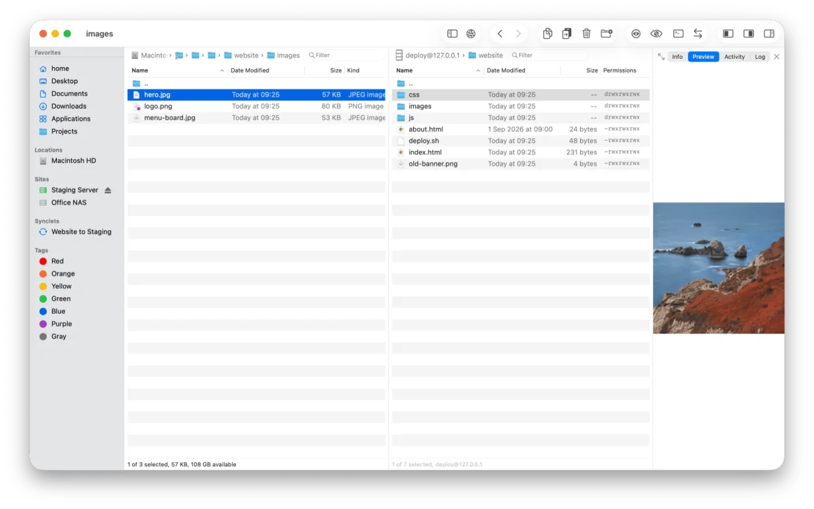
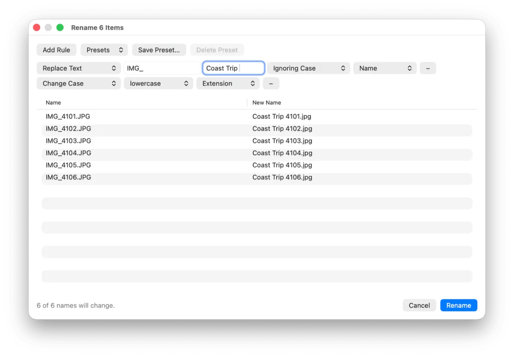
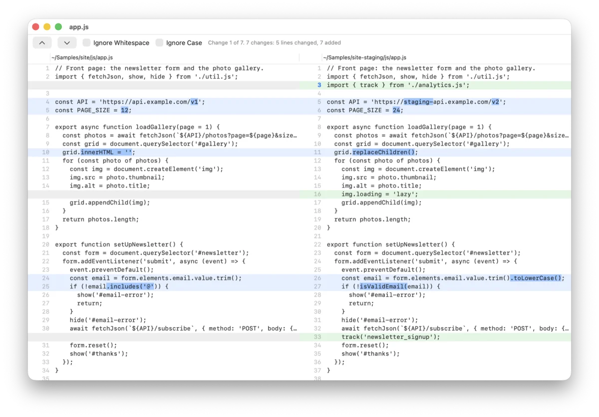
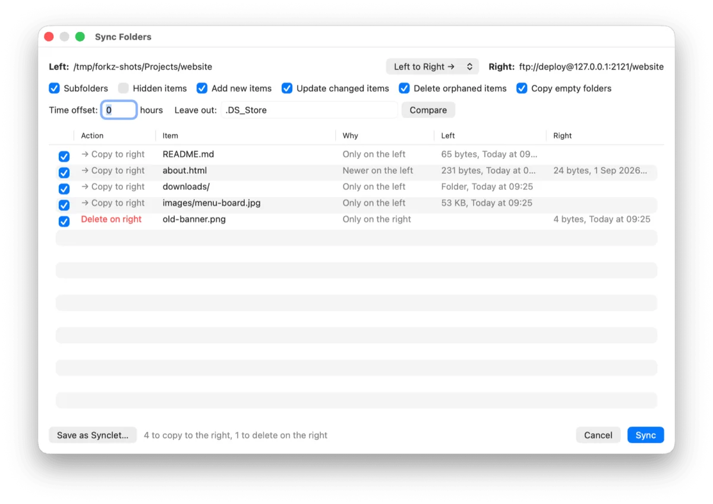
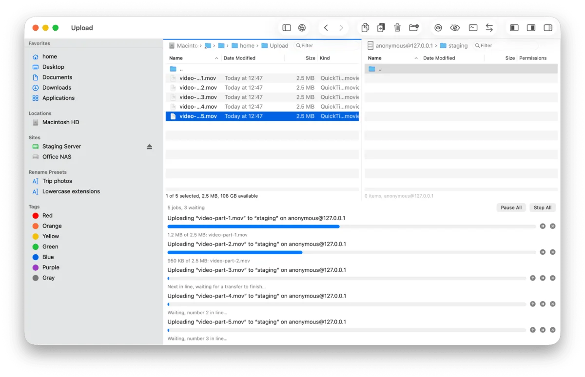
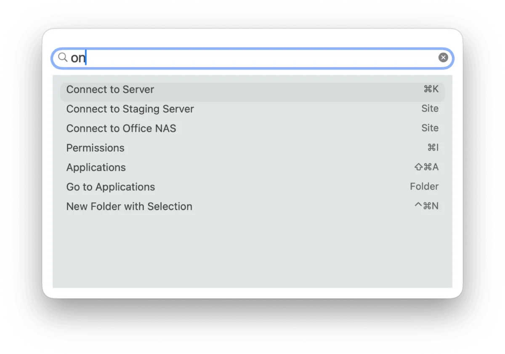
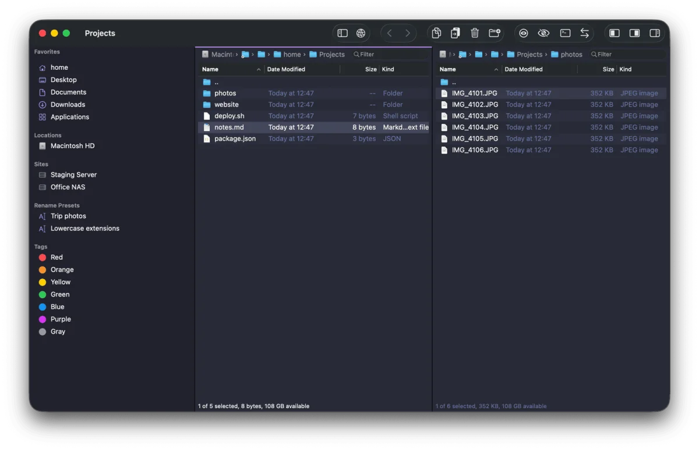

Rename many files at once
Stack rules (replace, insert, remove, change case, number, or date) and see every new name before anything changes. Save rule sets as presets for next time.
A dual-pane file manager for macOS: browse, copy, move, compare, and sync files on your Mac, on servers, and in cloud storage, side by side.
Free and open source. For Macs with Apple silicon, macOS 14 or later. Or install it with Homebrew: brew install --cask houseofmackee/tap/forkz

Lists, icons, columns, or a gallery, with tabs, a filter, Quick Look, and a terminal below the panes.
SFTP, FTP, WebDAV, S3, Azure, Box, Dropbox, Google Drive, and network shares, in the same panes as your Mac.
Rename many items at once, compare and sync folders, search by name, contents, size, or date, and undo changes.
Stack rules (replace, insert, remove, change case, number, or date) and see every new name before anything changes. Save rule sets as presets for next time.

See what changed between two files, word by word, or between two folders, on your Mac or on a server.

Preview what will be copied and deleted, then sync in either direction. Save it as a synclet to run again in one click.

Pause, resume, and reorder uploads and downloads, set speed limits, and keep browsing while they run.

The command palette runs any command and goes to any place, site, or folder. Every shortcut can be changed.

Light, dark, and a range of color themes, or make your own. Text size, row spacing, and columns are up to you.

forkz can show your Google Drive in one of its panes, so you can work with your files there as you do with files on your Mac. When you choose to connect, forkz asks Google for permission to see, edit, create, and delete your Google Drive files. It needs this to list your folders, download and upload files, rename, move, copy, and delete them, and make share links, each time because you asked it to.
forkz talks to Google straight from your Mac. Your files and your sign-in are never sent to the developer of forkz or to anyone else, and forkz has no servers. The sign-in is kept in your Mac’s Keychain, and you can remove forkz’s access at any time in your Google Account. The privacy policy has the details.